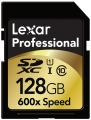

为专业摄影师和摄像师及高端摄影摄像发烧友而设计，Lexar 专业系列 600x SDXC UHS-I 存储卡采用 UHS-I 技术，带来无与伦比的高速性能和可靠性，是使用 SDXC 格式的设备拍摄高画质图片和超长 1080p 高清视频的理想拍档。该卡具备业界领先的最低 90MB 每秒（600x）的读取速度保证，显著加速整个摄影工作流程，让用户全身心专注于摄影本身。附赠图像抢救软件 Image Rescue 4，帮助恢复丢失的照片和视频。目前提供 64GB和128GB 两种容量选择。
速度很快的SD卡
质量可靠
无